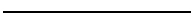

Atlas Metrics is an ESG data infrastructure platform helping banks, funds, and businesses collect, analyze, and report non-financial data across complex regulatory frameworks like CSRD, SFDR, and the GHG Protocol.
The platform serves organizations navigating a landscape where compliance requirements evolve faster than most teams can keep up.
We turned a technically and regulatorily complex domain into something approachable, structured, and trustworthy, from the first data input to the final audit-ready report.
Lead / Founder Designer
Product Management
Web application (desktop)
Design system
Branding & visual language
Marketing website (Framer)
User research & customer interviews
Product roadmapping
Design process & team foundations
Scaled from zero, growing ARR 139% a year. Atlas was acquired by Novata in 2026 to expand its reach across global private markets.
ESG reporting sits at the intersection of regulatory pressure, data fragmentation, and organizational complexity. Most companies deal with:
Most existing solutions were built for compliance departments, not for the people actually doing the work. The result: tools that were rigid, slow, and disconnected from real workflows.
We shaped a platform that turns regulatory complexity into a clear, guided workflow, one that could serve a sustainability manager at a mid-size company and a risk analyst at a major bank within the same system. As the founding designer, the role extended beyond craft: contributing to roadmap decisions, shaping product priorities, and establishing the design processes that would support a growing team.
Rather than a single feature, Atlas was built as a connected suite. Each chapter solves a distinct problem in the ESG data journey.
Atlas grew from an early-stage product into a platform serving hundreds of organisations across banks, funds and portfolio companies. The gap between what the product did and what customers needed was absorbed by people: an in-house ESG consulting team who ran workshops, set up accounts, answered questions and did by hand whatever the app didn't do yet. It worked, but it didn't scale. Every new customer meant more consultant hours, and the team couldn't keep growing in step.
Our ESG consultants were consistently working over hours. Support tickets were high, the same questions kept arriving, and there was a backlog of features customers wanted on top of it. Internally the explanation was bad UX: the app was confusing, so people called us instead.
We ran user interviews and mapped the full customer journey as a service blueprint, from contract signature through preparation, onboarding, data collection, reporting, off season and into the next reporting year. Every step was marked as either in-platform or manual.
Service blueprint mapping the full customer journey, each step marked in-platform or manual
Service blueprint of the full customer journey.
The map made the assumption look wrong. Only one phase of the journey happened inside the product. Everything before it (contract handover, the welcome call, collecting account information, the consulting and customisation workshops, account setup, invites to portfolio companies) ran on spreadsheets, decks, email and calls. Reporting partly left the platform too, with final reports filled in on official templates off-platform.
So the app had real problems. They just weren't the whole bill. The pain points sitting in the manual columns were things no interface change would touch: information collected from customers by hand and re-entered into Atlas, a fully human onboarding process that didn't scale, delays between contract and access, miscommunication between sales and CS, expectations set in sales negotiations that the product then had to meet.
Prioritized pain points grid, grouped by process-related and product-related issues, high-priority items flagged
Pain points prioritized by process-related and product-related issues
That split the work in two. Fix what was genuinely broken inside the app, and start moving the work that had never been in it.
I set principles to design against. Three drove this:
The entry point already existed. It was a Reporting Summary: completion dial, disclosure counts, progress bars, task counts by state. It reported status accurately and answered the wrong question. A user could see 57% complete and a lot of progress bars and still not know what to do that morning.
I replaced it with a What's next list that names the tasks waiting on this user, with a due date, an urgency, and a button that opens the work. The aggregate view moved below as per-framework progress, where it answers "how are we doing" instead of "now what".
Home, replacing the Reporting Summary with a What's next list
Entering data had been one datapoint at a time. Open a modal, fill in a field, submit, close, find the next one. A task that was really a hundred small answers became a hundred separate trips through the same interface.
I rebuilt it as a single working surface. A whole task opens once, in one place, with the questions in one continuous flow. I condensed the secondary information into the margins, stripped out what wasn't needed at the point of entry, and moved the guidance next to the question that needed it.
Nobody wants to spend their week entering ESG data, so the goal was to make it quicker to get through and easier to digest: far fewer clicks, and a clear read at any moment on how far along you are and what's left before the deadline.
Data collection, after
Data collection, before
Data collection, one continuous flow instead of a field at a time
As the app grew, the pieces stopped hanging together. Each new feature arrived as its own module, and nothing said how they related or which order to do them in. A framework could only be navigated through its own taxonomy, which is accurate to the regulation and useless if you don't already know the regulation.
I gave each framework its own dashboard and laid the work out as a sequence, so the order was stated rather than something you were expected to know. Numbered steps from setting up the base through to the final report, each with task counts, time estimates and an estimated completion date.
SFDR, restructured into its own step-by-step journey
The sequence isn't shared. CSRD, SFDR and GRI ask for different things in a different order, so each gets its own path rather than one generic checklist. SFDR, for instance, needs data collected from every portfolio company, so its dashboard tracks progress per company inside the step. CSRD doesn't work that way. Same underlying pattern, shaped to what each standard actually demands.
Onboarding was the clearest case of work that had never been in the product. Every kind of setup ran on calls, spreadsheets and documents, handled by the consulting team one client at a time.
We picked the new reporting year first because it looked like the quickest win. These are existing customers who are already set up. Nothing new to configure, just roll the previous year forward. It also came round for everyone at once, so automating it would take a predictable, repeating load off the team.
I was the designer on this, and for stretches of it the PM as well. The interface turned out to be the last problem, not the first.
It was scoped as a straightforward piece of design. A week, roughly. The estimate came off a clickthrough someone had generated with AI: real-looking screens, a flow that ran end to end, dropdowns full of plausible options. Take the steps a consultant already followed and put them on screen.
AI-generated clickthrough prototype of the organization mapping step
AI-generated prototype
Discovery killed that. To let a customer set up their own reporting year, the product needs to know what that customer actually has: which frameworks they report against, which funds, which features they pay for. None of that existed in a form the product could read. Contracts weren't standardised, and what had been agreed was recorded nowhere except in PDFs.
Service and contract configuration table mapping service types, metrics, and required platform features and modules
Contract terms, mapped to services, metrics, and the platform features and modules each one requires
So the real first task wasn't the flow. It was getting to a standardised backend representation of every customer's setup, so the product could tell each one what applied to them and what didn't. That's the cost of moving work that was never designed to live in software: before you can build the screen, you have to make the thing behind it legible.
It took closer to six months, build included.
Four steps: org structure, reporting setup, data requirements, submit. It carries the customer's existing configuration forward and asks them to confirm what changed. Behind each step sat a problem the screen doesn't show.
Org structure had a database already, but every entity in it had been added by hand. Letting customers build their own meant representing a tree the product had never had to hold, and the hard part wasn't the shape. It was rights and ownership: who can see which branch, who can edit it, what a group-level user is entitled to across entities they don't directly own. That took a few rounds with legal on GDPR.
Planning notes, Slack thread, and diagram mapping org tree requirements and permission cascades
Working out the org tree structure and permission cascade
Reporting setup was where the contract problem surfaced for the user. Once entitlements were standardised, we could show them plainly: this is what you're reporting on, this is what your contract covers, this is what the platform does that you're not currently buying. That last line was a side effect worth keeping: a customer showing interest in a module they didn't have now had somewhere obvious to be noticed and passed to sales.
Specification mapping network standards to data requirements per reporting level, with options, tooltips and edge cases per standard
Mapping every reporting standard to what it requires at GP, fund and portfolio level
Data requirements falls out of the step before it. Once the reporting setup is machine readable, the required data points are derivable rather than assembled by a consultant. That screen is mostly a consequence.
Reports setup screen listing frameworks with configuration status, next to fund-level reporting requirement selection
Reports setup with data requirements configuration
Submit isn't the end. The flow is self-serve, but the output wasn't trusted enough yet to go straight through, so the last step is a person. The ESG team needs to see what changed, not re-read the whole configuration, just the delta. A reviewer who has to reconstruct the change from scratch stops reviewing within a month.
Internal admin screen showing reporting setup changes for a customer, with a diff between the previous and new year's values and an approve or reject action
The backend admin screen, where the ESG team reviews the delta before approving
Making that check intelligent enough to disappear is phase two. The first release had enough in it: a structure builder, a contract model, a derived requirements layer.
The year setup moved from the consulting team to the customer. Consultants now review the result and pick up anything a customer has flagged, rather than working through every account by hand. Still work, but a fraction of it, and it stopped landing on the whole team in the same few weeks.
Support tickets dropped by roughly 75%, and consultants spent far less time in calls explaining next steps, freeing up an estimated 10 to 15 hours of meetings per consultant per week.
Support Tickets -75% Client Calls ↓ 10-15 hrs Customers 🙂 HappierBuilding Atlas from zero to acquisition meant designing through every stage of a product's life, from rough early concepts with no users to a mature platform trusted by financial institutions across 15+ countries.
The challenge was never any single feature. It was maintaining coherence, quality, and user trust across a product that kept expanding in every direction.
Zero users
No platform
Rough concepts
Mature platform
15+ countries
3000+ businesses
Acquired by Novata, 2026

Angelo Wellens, Product Designer
Builds from first idea to launched product